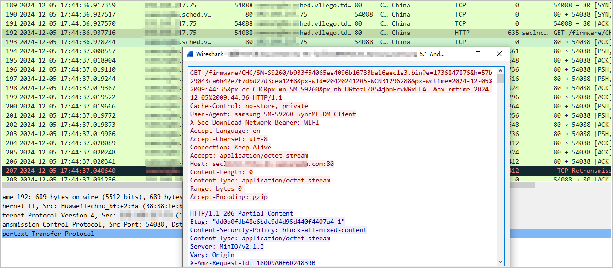
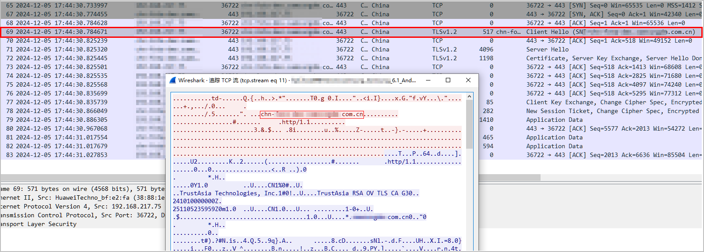

Example for Configuring Access Control by Application
Networking Requirements
As shown in Figure 1, DeviceA is deployed at the border of an enterprise network as a security gateway. Based on their levels and responsibilities, employees of the enterprise are divided into three types: senior executives, marketing employees, and R&D employees. The three types of users have different permissions to access the Internet, as described in Table 1.
User |
IP Address |
Permission |
|---|---|---|
Senior executives |
10.3.0.2 to 10.3.0.20 |
Can have free access to the Internet. However, upgrading the software version of mobile phones is not allowed in order to avoid consuming the bandwidth for normal services. |
Marketing employees |
10.3.0.21 to 10.3.0.120 |
Can access the Internet but cannot use IM software (for example, Tencent QQ). In addition, to avoid consuming the bandwidth for normal services, upgrading the software version of mobile phones is not allowed. |
R&D employees |
10.3.0.121 to 10.3.0.220 |
Can only access the TortoiseSVN application. In addition, to avoid consuming the bandwidth for normal services, upgrading the software version of mobile phones is not allowed. |
Configuration Roadmap
- Configure an IP address for each interface, assign interfaces to security zones, and complete basic parameter settings.
- Configure three address objects, namely, the network segments where the PCs of senior executives, marketing employees, and R&D employees reside. The address objects are referenced as source IP address matching conditions in security policies.
- Update the SA signature database.
- Configure user-defined applications to identify the traffic of the applications that are not covered by predefined applications.
The predefined applications include TortoiseSVN and IM applications. The traffic of upgrading the software versions of mobile phones does not belong to the traffic of predefined applications. Therefore, user-defined applications are required to identify the traffic of upgrading the software versions of mobile phones. First, you can obtain packets to analyze the characteristics of the traffic for upgrading the software version of mobile phones, and then create rules for matching the data flow characteristics.
- Configure security policies to block the traffic for upgrading the software version of mobile phones, allow senior executives to access the Internet, block the traffic for marketing employees to use IM applications, allow the traffic for marketing employees to access the Internet, and allow the traffic for R&D employees to use TortoiseSVN.
Procedure
- Configure an IP address for each interface, assign interfaces to security zones, and complete basic parameter settings.
# Configure an IP address for 10GE0/0/1 and assign the interface to the Trust zone.
<HUAWEI> system-view [HUAWEI] sysname DeviceA [DeviceA] interface 10ge 0/0/1 [DeviceA-10GE0/0/1] undo portswitch [DeviceA-10GE0/0/1] ip address 10.3.0.1 24 [DeviceA-10GE0/0/1] quit [DeviceA] firewall zone trust [DeviceA-zone-trust] add interface 10ge 0/0/1 [DeviceA-zone-trust] quit
# Configure an IP address for 10GE0/0/2 and assign the interface to the Untrust zone.
[DeviceA] interface 10ge 0/0/2 [DeviceA-10GE0/0/2] undo portswitch [DeviceA-10GE0/0/2] ip address 1.1.1.1 24 [DeviceA-10GE0/0/2] quit [DeviceA] firewall zone untrust [DeviceA-zone-untrust] add interface 10ge 0/0/2 [DeviceA-zone-untrust] quit
- Configure address objects for the three types of users.
# Configure an address object for senior executives.
[DeviceA] ip address-set management type object [DeviceA-object-address-set-management] address 0 range 10.3.0.2 10.3.0.20 [DeviceA-object-address-set-management] quit
# Configure an address object for marketing employees.
[DeviceA] ip address-set marketing type object [DeviceA-object-address-set-marketing] address 0 range 10.3.0.21 10.3.0.120 [DeviceA-object-address-set-marketing] quit
# Configure an address object for R&D employees.
[DeviceA] ip address-set research type object [DeviceA-object-address-set-research] address 0 range 10.3.0.121 10.3.0.220 [DeviceA-object-address-set-research] quit
- Update the SA signature database.
The Huawei Security Center (https://isecurity.huawei.com/security/home) periodically releases the latest SA signature database. To help devices effectively identify applications in traffic, update devices' SA signature databases to the latest version in a timely manner. For details, see Updating a Service Awareness Signature Database.
- Create a user-defined application.
Predefined applications cannot meet the networking requirement that employees cannot upgrade the software version of mobile phones. Therefore, user-defined applications are needed. First, you can obtain packets to analyze the characteristics of the traffic for upgrading the software version of mobile phones, and then create rules for matching the data flow characteristics.
The live-network traffic is complex, and it may be difficult to extract application characteristics. If you still cannot complete user-defined application configurations by referring to this case, contact Huawei technical support.
- The obtained packets show that the two key packets for upgrading the software version of mobile phones contain the address of the upgrade server.


- Create and configure a user-defined application. The information extracted from the obtained packets is used as the signature of the user-defined application. The extracted information is the key feature of the application. Analyze the actual live-network configuration based on the actual application.
[DeviceA] sa [DeviceA-sa] user-defined-application name UD_upgrade_os [DeviceA-sa-user-defined-app-UD_abc] rule name 1 [DeviceA-sa-user-defined-app-UD_abc-rule-1] protocol tcp [DeviceA-sa-user-defined-app-UD_abc-rule-1] port 80 [DeviceA-sa-user-defined-app-UD_abc-rule-1] signature context packet direction request plain-string "*****" field General-Payload //The character string here is only an example. Replace ***** with the complete character string obtained from the obtained packets. Here, the Host field value in HTTP packets is used as an example. [DeviceA-sa-user-defined-app-UD_abc-rule-1] quit [DeviceA-sa-user-defined-app-UD_abc] rule name 2 [DeviceA-sa-user-defined-app-UD_abc-rule-2] protocol tcp [DeviceA-sa-user-defined-app-UD_abc-rule-2] port 443 [DeviceA-sa-user-defined-app-UD_abc-rule-2] signature context packet direction request plain-string ***** field General-Payload //The character string here is only an example. Replace ***** with the complete character string obtained from the obtained packets. Here, the SNI field value in TLS packets is used as an example. [DeviceA-sa-user-defined-app-UD_abc-rule-2] quit [DeviceA-sa-user-defined-app-UD_abc] quit [DeviceA-sa] quit
- Commit the configuration.
[DeviceA] engine configuration commit

After a user-defined application is created, modified, or deleted, the configuration does not take effect immediately. You need to commit the configuration for activation.
- The obtained packets show that the two key packets for upgrading the software version of mobile phones contain the address of the upgrade server.
- Configure a security policy to prevent all employees from upgrading the software version of their mobile phones and ensure the bandwidth for normal services.
[DeviceA] security-policy [DeviceA-policy-security] rule name policy_sec_deny_upgrade_os [DeviceA-policy-security-rule-policy_sec_deny_upgrade_os] source-zone trust [DeviceA-policy-security-rule-policy_sec_deny_upgrade_os] destination-zone untrust [DeviceA-policy-security-rule-policy_sec_deny_upgrade_os] application app UD_upgrade_os [DeviceA-policy-security-rule-policy_sec_deny_upgrade_os] action deny [DeviceA-policy-security-rule-policy_sec_deny_upgrade_os] quit
UD_upgrade_os is the user-defined application created in the previous step. It is used to identify the traffic generated by upgrading the software version of mobile phones.
- Configure a security policy to allow senior executives to access the Internet.
[DeviceA-policy-security] rule name policy_sec_management [DeviceA-policy-security-rule-policy_sec_management] source-zone trust [DeviceA-policy-security-rule-policy_sec_management] destination-zone untrust [DeviceA-policy-security-rule-policy_sec_management] source-address address-set management [DeviceA-policy-security-rule-policy_sec_management] action permit [DeviceA-policy-security-rule-policy_sec_management] quit
- Configure a security policy for marketing employees to prohibit the use of IM software (Tencent QQ is used as an example).
[DeviceA-policy-security] rule name policy_sec_marketing_1 [DeviceA-policy-security-rule-policy_sec_marketing_1] source-zone trust [DeviceA-policy-security-rule-policy_sec_marketing_1] destination-zone untrust [DeviceA-policy-security-rule-policy_sec_marketing_1] source-address address-set marketing [DeviceA-policy-security-rule-policy_sec_marketing_1] application app QQ_IM [DeviceA-policy-security-rule-policy_sec_marketing_1] application app QQ_VoIP [DeviceA-policy-security-rule-policy_sec_marketing_1] action deny [DeviceA-policy-security-rule-policy_sec_marketing_1] quit
- Configure a security policy for R&D employees to access only the TortoiseSVN application.
[DeviceA-policy-security] rule name policy_sec_research [DeviceA-policy-security-rule-policy_sec_research] source-zone trust [DeviceA-policy-security-rule-policy_sec_research] destination-zone untrust [DeviceA-policy-security-rule-policy_sec_research] source-address address-set research [DeviceA-policy-security-rule-policy_sec_research] application app TortoiseSVN [DeviceA-policy-security-rule-policy_sec_research] action permit [DeviceA-policy-security-rule-policy_sec_research] quit
Other Internet access traffic of R&D employees matches the default security policy and is blocked.
- Set the action of the default security policy to deny.
[DeviceA-policy-security] default action deny
Verifying the Security Policy Configuration
- Use a PC on the network segment of senior executives to verify that the PC can access the Internet without any restriction. Verify that senior executives cannot upgrade the software version of their mobile phones.
- Use a PC on the network segment of marketing employees to verify that the PC can access other network applications but cannot use Tencent QQ for chatting. Verify that marketing employees cannot upgrade the software version of their mobile phones.
- Use a PC on the network segment of R&D employees to verify that the PC can access only TortoiseSVN and cannot access the Internet. Verify that R&D employees cannot upgrade the software version of their mobile phones.
Configuration Scripts
# ip address-set management type object address 0 range 10.3.0.2 10.3.0.20 # ip address-set marketing type object address 0 range 10.3.0.21 10.3.0.120 # ip address-set research type object address 0 range 10.3.0.121 10.3.0.220 # interface 10GE1/0/1 ip address 10.3.0.1 255.255.255.0 # interface 10GE1/0/2 ip address 1.1.1.1 255.255.255.0 # firewall zone trust set priority 85 add interface 10GE1/0/1 # firewall zone untrust set priority 5 add interface 10GE1/0/2 # sa user-defined-application name UD_upgrade_os label Bandwidth-Consuming Mobile-Supported rule name 1 protocol tcp port 80 signature context packet direction request plain-string "*****" field General-Payload rule name 2 protocol tcp port 443 signature context packet direction request plain-string ***** field General-Payload # security-policy rule name policy_sec_deny_upgrade_os source-zone trust destination-zone untrust application app UD_upgrade_os action deny rule name policy_sec_management source-zone trust destination-zone untrust source-address address-set management action permit rule name policy_sec_marketing_1 source-zone trust destination-zone untrust source-address address-set marketing application app QQ_IM application app QQ_VoIP action deny rule name policy_sec_marketing_2 source-zone trust destination-zone untrust source-address address-set marketing action permit rule name policy_sec_research source-zone trust destination-zone untrust source-address address-set research application app TortoiseSVN action permit # return